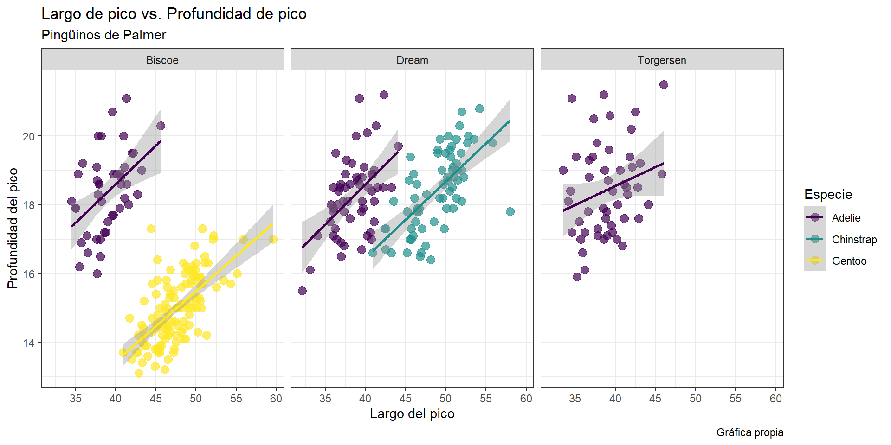
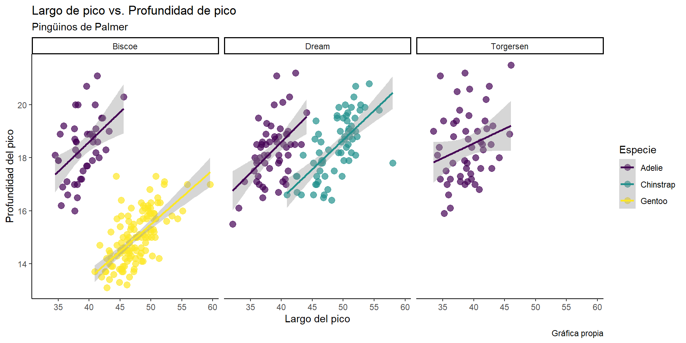
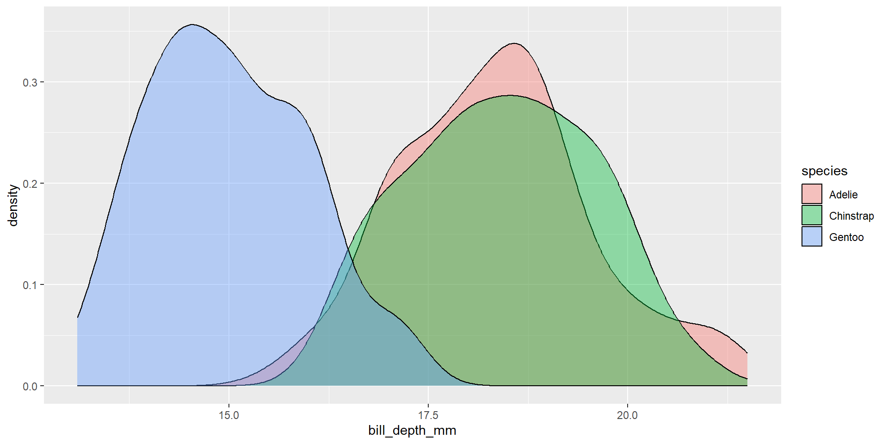
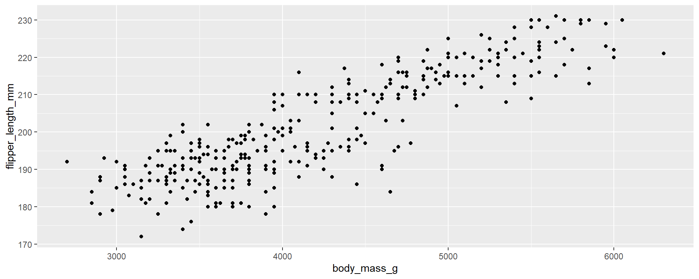

Estadística aplicada con R
Módulo 3: Análisis Exploratorio de Datos e introducción a ggplot2
Científico Bioestadístico en Bayer AG
Introducción
El análisis exploratorio de datos (AED) es una herramienta bastante útil pero a menudo olvidada.
Entre los muchos objetivos del AED, están:
Obtener una idea de la distribución de los datos
Llevar a cabo un control de la calidad de los datos (valores anómalos u outliers, errores)
Identificar observaciones perdidas y su severidad
Identificar correlaciones entre variables
El AED es mayoritariamente visual. Por ello aprovecharemos esta oportunidad para llevar a cabo una introducción a la librería
ggplot2y también haremos uso de los gráficos base de R cuando amerite el caso.Utilizaremos dos tablas de datos, los pingüinos de Palmer (librería
palmerpenguins) y rotXLS, que utilizamos brevemente en el primer módulo.Utilizaremos librerías adicionales a lo largo de este módulo que serán debidamente descritas.
Introducción a ggplot2
ggplot2
ggplot2es una librería de gráficos de R creada por Hadley Wickham en 2005 como una opción alternativa a los gráficos base de R.Su funcionamiento se basa en añadir elementos a un gráfico capa por capa.
Presenta varias ventajas, entre ellas:
Mayor versatilidad al integrar funciones predeterminadas que permiten cambiar entre tipos de gráficos fácil y rápidamente.
Amplia variedad de paletas de color y estilos (útiles para crear gráficos profesionales y listos para publicación).
Basta cantidad de librerías accesorias para gráficos especializados.
Función de mapeo
Geometrías

Geometrías
Existen varias geometrías útiles para diversos tipos de gráficos
geom_barpara gráficos de barrasgeom_linepara gráficos de lineasgeom_boxplotpara gráficos de caja y bigotegeom_histogrampara histogramasgeom_densitypara densidadesy muchas más, entre ellas, geometrías estadísticas
Geometrías
Geometrías
Geometrías
Escalas
Paletas de color
Una de las razones por las cuales
ggplot2es tan popular, es la relativa sencillez de usar distintas paletas de color.Al no ser un curso dedicado a visualización de datos, nos limitaremos a explorar la oferta de mis dos librerías preferidas para paletas de color con
ggplot2.viridisofrece 8 paletas de color basadas en secuencias de azul y amarillo que evitan en la medida de lo posible el color rojo. Es recomendada por ciertos Journals al ser amigable con personas daltónicas.ggsciofrece varias paletas de color inspiradas en los colores usados por distintos journals (por ejemplo: Nature, Lancet entre otros), además de paletas inspiradas en series de televisión (por ejemplo: Futurama, Rick & Morty entre otros).
Paletas de color
Paletas de color
Gráficos de facetas

Etiquetas
ggplot(penguins,
aes(x = bill_length_mm, y = bill_depth_mm, colour = species)) +
geom_point(alpha = 0.7,
size = 3) +
geom_smooth(method = "lm") +
scale_x_continuous(breaks = seq(30, 60, 5)) +
scale_y_continuous(breaks = seq(10, 24, 2)) +
scale_color_viridis(discrete = T) +
facet_wrap(~island) +
labs(title = "Largo de pico vs. profundidad de pico",
subtitle = "Pingüinos de Palmer",
caption = "Gráfica propia",
x = "Largo del pico",
y = "Profundidad del pico",
color = "Especie")Estilos
ggplot(penguins,
aes(x = bill_length_mm, y = bill_depth_mm, colour = species)) +
geom_point(alpha = 0.7,
size = 3) +
geom_smooth(method = "lm") +
scale_x_continuous(breaks = seq(30, 60, 5)) +
scale_y_continuous(breaks = seq(10, 24, 2)) +
scale_color_viridis(discrete = T) +
facet_wrap(~island) +
labs(title = "Largo de pico vs. profundidad de pico",
subtitle = "Pingüinos de Palmer",
caption = "Gráfica propia",
x = "Largo del pico",
y = "Profundidad del pico",
color = "Especie") +
theme_bw()
Gráficos como objetos
grafico1 <- ggplot(penguins,
aes(x = bill_length_mm, y = bill_depth_mm, colour = species)) +
geom_point(alpha = 0.7,
size = 3) +
geom_smooth(method = "lm") +
scale_x_continuous(breaks = seq(30, 60, 5)) +
scale_y_continuous(breaks = seq(10, 24, 2)) +
scale_color_viridis(discrete = T) +
facet_wrap(~island) +
labs(title = "largo de pico vs. Profundidad de pico",
subtitle = "Pingüinos de Palmer",
caption = "Gráfica propia",
x = "Largo del pico",
y = "Profundidad del pico",
color = "Especie") +
theme_bw()
grafico2 <- grafico1 + theme_classic()
grafico2
Ejercicio 3.1
Con la ayuda del anterior código, realiza un gráfico de dispersión entre las variables flipper_length_mm y body_mass_g en facetas determinadas por la variable sex. Para explorar más opciones de las paletas de color y los estilos, puedes usar las siguientes expresiones:
viridis:scale_color_viridis(discrete = T, option = "A")donde el argumentooptionte permite escoger varias paletas (A: magma, B: inferno, C: plasma, D: viridis, E: cividis, F: rocket, G: mako y H: turbo)
ggsci:- Puedes variar la terminación del comando
scale_color_con cualquiera de las siguientes opciones:npg,aaas,nejm,simpsons,rickandmorty.
- Puedes variar la terminación del comando
Estilos:
- Reemplaza la línea
theme_bw()por cualquiera de las siguientes opcionestheme_gray(),theme_dark(),theme_minimal(),theme_classic()
- Reemplaza la línea
¿Notas algo raro en las facetas?
Para mayor información, puedes revisar la documentación de viridis en este enlace, de ggsci en este enlace y la de los estilos de ggplot2 en este otro enlace.
Principios de Análisis Exploratorio de Datos (AED)
Datos perdidos
La perdida de datos es común en casi todo experimento, sobre todo en aquellos de naturaleza observacional.
El primer paso que recomiendo en un análisis exploratorio, es checar si existen o no datos perdidos.
Esto por cuanto así se prevee si los métodos de inferencia a usarse necesitan o no ser corregidos.
Únicamente cuando la severidad de la pérdida de datos es muy grande aconsejo a recurrir a estas dos opciones (en orden de complejidad estadística de menor a mayor)
Repetir el experimento
Llevar a cabo imputación de datos
En este curso vamos a limitarnos a usar métodos de análisis corregidos cuando estemos ante la presencia de datos perdidos ya que la imputación de datos requiere de conocimientos teóricos extensos acerca de los tipos de mecanismos de pérdida de datos.
EVITAR el reemplazar los valores perdidos por ceros. Esta suele ser una práctica más o menos común pero que introduce mayores problemas que los que “soluciona”.
En resumen, no hay que temer el contar con datos perdidos, siempre y cuando estos no sean masivos.
Datos perdidos
Datos perdidos
$Continuous
label var_type n missing_n missing_percent
bill_length_mm bill_length_mm <dbl> 342 2 0.6
bill_depth_mm bill_depth_mm <dbl> 342 2 0.6
flipper_length_mm flipper_length_mm <int> 342 2 0.6
body_mass_g body_mass_g <int> 342 2 0.6
year year <int> 344 0 0.0
mean sd min quartile_25 median quartile_75 max
bill_length_mm 43.9 5.5 32.1 39.2 44.5 48.5 59.6
bill_depth_mm 17.2 2.0 13.1 15.6 17.3 18.7 21.5
flipper_length_mm 200.9 14.1 172.0 190.0 197.0 213.0 231.0
body_mass_g 4201.8 802.0 2700.0 3550.0 4050.0 4750.0 6300.0
year 2008.0 0.8 2007.0 2007.0 2008.0 2009.0 2009.0
$Categorical
label var_type n missing_n missing_percent levels_n
species species <fct> 344 0 0.0 3
island island <fct> 344 0 0.0 3
sex sex <fct> 333 11 3.2 2
levels levels_count levels_percent
species "Adelie", "Chinstrap", "Gentoo" 152, 68, 124 44, 20, 36
island "Biscoe", "Dream", "Torgersen" 168, 124, 52 49, 36, 15
sex "female", "male", "(Missing)" 165, 168, 11 48.0, 48.8, 3.2Datos perdidos
Datos perdidos

Datos perdidos
sub_penguins <- na.omit(penguins)
ggplot(sub_penguins,
aes(x = flipper_length_mm, y = body_mass_g, colour = species)) +
geom_point(alpha = 0.7,
size = 3) +
geom_smooth(method = "lm") +
scale_x_continuous(breaks = seq(150, 250, 10)) +
scale_y_continuous(breaks = seq(2500, 7000, 500)) +
scale_color_viridis(discrete = T) +
facet_wrap(~sex) +
labs(title = "Largo de aleta vs. peso",
subtitle = "Pingüinos de Palmer",
caption = "Gráfica propia",
x = "Largo de aleta",
y = "Peso",
color = "Especie") +
theme_bw()
Observaciones anormales (outliers)
Un outlier puede definirse como aquella observación que dista considerablemente de la mediana de una población.
Pueden deberse a errores en la toma de mediciones o valores que realmente existen.
En estadística, un outlier es definido de acuerdo al criterio del Rango Intercuartílico (RIC o IQR en inglés).
Este criterio establece que toda observación por encima del tercer cuartil + 1.5 veces el RIC o por debajo del primer cuartil - 1.5 veces el RIC es considerada como outlier.
\[ I=\left[C_{0.25}-1.5 \times RIC ,\,C_{0.75}+1.5 \times RIC \right] \]
Donde el RIC es sencillamente la diferencia entre el primer y el tercer cuartil de una muestra.
Este método es precisamente la base para los gráficos de caja y bigote.
Gráficos de caja y bigote

- Un gráfico de caja y bigote es el resumen de 5 cantidades de importancia para explorar una distribución: la mediana, los cuantiles 1 y 3 y los valores mínimo y máximo de una distribución en función del RIC
Imagen de autoría de Michael Galarnyk
Gráficos de caja y bigote en R base
Gráficos de caja y bigote en R base
Los gráficos base de R son de rápida implementación.
Generalmente los uso para dar vistazos rápidos a los datos.
Pueden por supuesto ser usados para productos finales de publicación, pero la sintaxis para dar formato y exportarlos es un tanto confusa (a mi parecer).
Tienen sus limitaciones, ¿qué tal si en este caso me hubiese gustado realizar un gráfico por facetas para ver más variables categóricas al mismo tiempo?
Gráficos de caja y bigote en ggplot2
Ejercicio 3.2
Usando como base el código del ejemplo anterior, realiza un gráfico de facetas con la variable body_mass_g. Mira si existen o no outliers. ¿Crees conveniente removerlos?
Y ahora, ¿qué hago con los outliers?

Y ahora, ¿qué hago con los outliers?
El remover outliers no se aconseja antes de llevar a cabo análisis de inferencia estadística.
Para remover outliers antes de analizar propiamente los datos, se necesita tener certeza de las razones por las cuales estos fueron registrados:
Fallas comprobadas en el equipo de medición
Errores al escribir las mediciones en el medio de registro (libro de laboratorio, base de datos)
Falencias en las técnicas, metodologías o materiales que ayudaron en la toma de las observaciones (reactivos expirados, protocolos mal interpretados o descontinuados)
Si las anteriores no se cumplen, tener respaldo bibliográfico o experiencia de que el valor del outlier es improbable en la población sujeto de estudio.
Muchas veces, los aparentes outliers no tienen mayor efecto en las inferencias que se realicen. Y en los casos extremos de considerar su remoción, se puede recurrir a transformaciones de los datos. En otras palabras, el último recurso es removerlos.
Cuando llegado el caso, no existe otra opción, debería ser una obligación el reportar las razones para no considerarlos en el análisis (integridad científica).
¿Cómo remuevo outliers?
La respuesta más simple: borrarlos de la base de datos antes de cargarla en R.
Sin embargo, a veces trabajamos con tablas de datos extensas, y la remoción manual puede ser larga, tediosa y sujeta a errores que podrían empeorar la situación.
Para ilustrar cómo hacerlo en R, vamos a recurrir a un ejemplo más sencillo donde solo lidiemos con una variable categórica a la vez. Así, veamos únicamente al caso de las variables
bill_length_mmyspecies

¿Cómo remuevo outliers?
¿Cómo remuevo outliers?
Ejercicio 3.3
Remueve el outlier en el boxplot que se visualiza en la siguiente línea de código de R
Relaciones lineales
El dar un vistazo a relaciones lineales entre variables continuas también nos puede dar una idea de la presencia de outliers.
Adicionalmente, nos permite visualizar arreglos/patrones en los datos que responden a la influencia de variables de agrupación (en el ejemplo de los pingüinos ya vimos que las especies y las islas determinan algún tipo de arreglo).
También nos dan una idea de las correlaciones entre las variables. Esto es de mayor importancia en los casos que tenemos en mente llevar a cabo análisis multivariables.
Por ejemplo, en análisis de covarianza (cuando una o más variables explanatorias son continuas), no tiene sentido el incluir variables altamente correlacionadas entre sí.
Para esto, la forma más sencilla es llevar a cabo gráficos de dispersión para tantos pares posibles de combinaciones de variables continuas tengamos.
Esto obviamente sería tedioso y propenso a errores si lo llevamos a cabo de manera manual.
Afortunadamente R nos ofrece varias formas de llevar a cabo matrices de gráficos de dispersión
Matrices de dispersión en R base

Matrices de dispersión en ggplot2
Ejercicio 3.4
Realiza una matriz de dispersión usando los datos en el archivo excel “rotXLS.xlsx” que usamos en la primera sesión. Los datos contenidos en este archivo corresponden al conteo de casos de rotavirus en Berlín desde el 2001 hasta el 2020. Las variables contenidas en este archivo son:
date: fecha de cierre de la toma de datoscases: número de casos de rotavirus en la semanaweek: semana epidemiológicaincidence: número de casos/100000 habitantesFM: media diaria de velocidad del viento (m/s)RSK: media diaria de lluvia (mm)
SHK_TAG: media diaria de nieve (cm)PM: media diaria de presión atmosférica (hPa)TMK: media diaria de temperatura (°C)TXK: media diaria de temperatura máxima (°C)TNK: media diaria de temperatura mínima (°C)UPM: media diaria de humedad relativa (%)
Deja fuera de la matriz las variables date, incidence y week. ¿Cuáles variables crees que serían mejores para una inferencia estadística acerca de la relación clima-casos de rotavirus?
Histogramas
Un histograma es un gráfico estadístico que divide una variable continua en un determinado número de rangos y luego cuenta el número de veces que los datos caen en cada uno de ellos para producir una barra por rango.
Sirve como un diagnóstico de la distribución de una muestra.
Desde la perspectiva del AED, nos da una idea visual de si las variables se alejan de la normalidad.
Esto último podría dar indicaciones de si es necesaria una transformación.
¡Pero!… no es recomendable empezar transformando variables directamente hasta no conducir un análisis formal.
Histogramas en R base y ggplot2


Ejercicio 3.5
Realiza histogramas para las variables cases y TMK de la tabla de datos de casos de rotavirus en Berlín.
Más exploración
Lo que hemos revisado hasta el momento, son las técnicas más frecuentemente usadas para AED.
Sin embargo, existen librerías de R que permiten también hacer AED de una manera automática y más accesible.
Como ejemplos, haremos un enfoque en dos librerías que hacen uso de Shiny para brindar esta experiencia al usuario. Estas son
exploreydataxray
¡Antes de terminar por hoy!
Gráficos de barras

Gráficos de barras con porcentajes
Gráficos de barras apiladas

Gráficos de líneas

Gráficos de líneas con estadísticos descriptivos
library(lubridate)
library(dplyr)
rot_berlin$mes <- month(rot_berlin$date)
rot_berlin$year <- year(rot_berlin$date)
temp_berlin <- rot_berlin %>%
group_by(mes) %>%
summarise(n = n(),
media = mean(TMK),
desv = sd(TMK),
s.err = desv/sqrt(n))
grafico3 <- ggplot(temp_berlin,
aes(x = factor(mes),
y = media,
group = 1)) +
geom_point() +
geom_line() +
geom_errorbar(aes(ymin = media - s.err,
ymax = media + s.err),
width = .3)
grafico3
Combinando y exportando gráficos de ggplot2
Un reto que hemos todos encontrado alguna vez es el de combinar varios gráficos en uno solo.
Esto requiere paciencia y el uso de software externo (llámese CorelDraw, Adobe Illustrator, PowerPoint o incluso Paint).
La librería complementaria
patchworknos permite combinar gráficos deggplot2de una manera sencilla y rápida.Además, gracias a la función
ggsavedeggplot2podemos exportar fácilmente nuestros gráficos sin requerir (ojalá) a la ayuda de software externo para dar retoques finales a estos gráficos.
Combinando gráficos con patchwork
Para más información de las funciones y utilidades de patchwork puedes visitar la página oficial con su documentación y ejemplos.